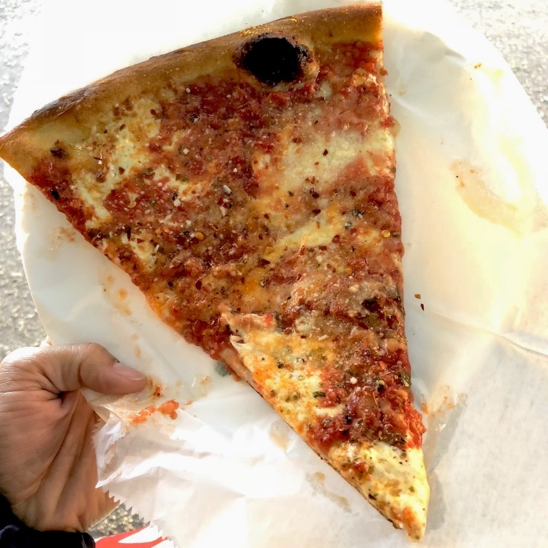

Latest Updates
Bar Virgile
8.7
Sister Liu's Kitchen
8.4
Pupuseria La Metapaneca
8.3
Naan Stop
7.3
Aladdin's Eatery
7.5
Hutchins Garage
8.7
Saltbox
9.1
Guasaca
8.1
Juice Keys
8.5
Vivo Ristorante
8.4
Q Shack
8.9
Viceroy
9.1
Seebeck's List
RDU Favs
Outside RDU Favs
Best Dishes
Log In
Outside RDU Favs
Full List
Top Ten - Outside RDU
9.5
Antico Forno Roscioli (Italy)
9.4
Private Vendor Tacos (VA)
9.4
King Taco (LA)
9.3
Roscoe's (LA)
9.3
Dal Moro's (Italy)
9.2
Ignazio's (NYC)
9.2
John's of Bleecker St (NYC)
9.2
Bang Bang Burgers (Charlotte)
9.1
Daikokuya (LA)
9.1
Marugame Udon (LA)
Antico Forno Roscioli
Rome, Italy
Daikokuya
Los Angeles, CA

Ignazio's
New York City, NY
Dal Moro's
Venice, Italy
Marugame Udon
Los Angeles, CA
Private Vendor
Virginia Beach, VA